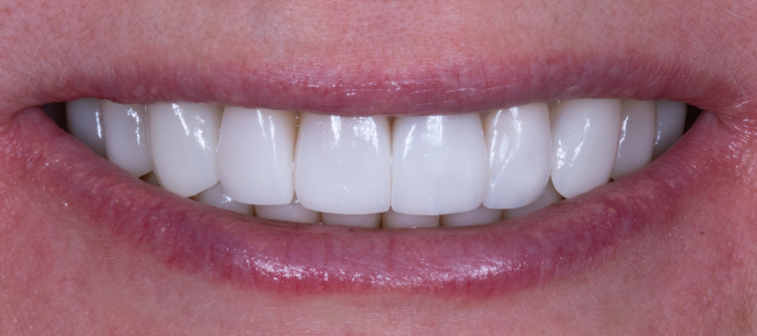

10.08.2023
Береги смолоду: почему стоит начать следить за здоровьем зубов как можно раньше
EVALUATION & DIAGNOSIS
A 72-year-old female patient was referred with a chief complaint, “I want to restore my central incisor". She refers no relevant medical history. Her past dental history included extensive restorative treatment with metal-ceramic crowns in the maxillary and mandibular arches.
A facial and dental analysis was performed using extraoral and intraoral pictures, CBCT, and conventional impressions to aid in developing a complete diagnosis and treatment plan.
In the intraoral analysis, the patient presented with decayed teeth #12, #11, #21, #22 FDI (#7, #8, #9, #10 US), crown fracture #11 FDI (#8 US), and over-contoured maxillary crowns on the central and lateral incisors.
A challenge with this treatment was that the patient refused a removable partial denture as a provisional prosthesis. As a result, it was necessary to place an immediate fixed partial prosthesis and achieve high primary stability on the implants as well as meet the patient expectations for high aesthetics.
The patient visited the surgical dental practice as an emergency due to a fracture of tooth 11. Her wish included not only a new restoration of the fractured tooth, but also a more aesthetic new restoration of the entire anterior teeth of the upper jaw. The patient was informed in detail about the course of treatment, risks, prognosis, costs and treatment alternatives. In terms of general medical history, there were no other special health features.
The decision for immediate implant placement was based on several reasons: This procedure saves the patient and the dentist time and effort, reduces costs and patient morbidity, and minimizes changes in the bone and soft tissue. The positions of implants 12 and 22 were determined using the extraction sockets as a reference. An anterior fixed partial denture with two pontics was planned on the implants, which could also optimally use for soft tissue conditioning. The patient discussed the desired tooth color together with our dental technician, who also included the patient's aesthetic wishes in the design. The treatment was planned in advance according to the patient's wishes, and the implant positions were determined using NobelClinician planning software.
Insertion of the provisional restoration
Depending on the previously determined tooth shade, a provisional aesthetic fixed partial denture made of Vita Flow resin teeth was fabricated in the dental laboratory and placed on the implants. Since we could not be sure before implant placement that we would achieve the necessary primary stability for immediate loading of the temporary restoration, the laboratory first made us a removable provisional prosthesis that served as a placeholder after the operation. Since the implant placement took place as planned and we achieved the stability of more than 35 Ncm required for immediate loading, we were able to make another impression of the situation with screwed-in impression posts so that the laboratory directly fabricated the fixed provisional restoration for us. Fitted with the removable provisional, the patient waited for the fixed version in our practice. An easy way to build up an implant is to use the Nobel Biocare NP abutment (temporary abutment element). To create a natural shape of the gingival line and to shape the soft tissue around the implant for an authentic appearance, an artificial gingival cover was used on a model. The shape of this provisional fixed partial denture was slightly over-contoured in the cervical area to apply gentle pressure on the soft tissue. The purpose of this procedure was to ensure that the form of the peri-implant mucosa in the area of the implant was optimally shaped. If necessary, this process can be repeated during the healing phase by adding composite resin material to apply targeted pressure. Finally, the correct fit was checked with the help of a radiograph and the patient was discharged from the practice for the duration of the soft tissue shaping, in this case for about four months.
Transfer of the soft tissue structure
The soft tissue structure shaped during the therapeutic period formed the basis for the customized abutments and the final restoration. First, it was necessary to transfer the shaped appearance of the soft tissue line to the model of the implant by fabricating customized impression posts. For this purpose, the provisional fixed partial denture was removed. The provisional prosthesis was then screwed onto the laboratory analogue NP outside the mouth and covered with a kneadable silicone material. After the silicone had hardened, the prosthesis was removed from the lab analogue and the impression posts were attached to the lab analogue embedded in the silicone. The space between the impression posts and the silicone was filled with composite resin material. These impression posts were then used to make the impression of the implants with a previously fabricated custom impression tray. The master cast now exactly matched the shape of the soft tissue profile in the area of teeth 11 and 21. While the patient was again satisfied with the long-term provisional, the dental technician fabricated the definitive crown.
Placement of the definitive crown
After completion of the definitive treatment, the patient came back to our practice. After removing the therapeutic provisional, the peri-implant soft tissue was healthy as expected, well supplied with blood and shaped as desired in region 11 and 21, so that we were able to place the definitive restoration made of zirconium oxide without any complications. The prosthetic restoration blended into its natural environment completely invisibly and the patient regained her radiant smile. It is the comparison between the initial situation and the final restoration that confirms our approach. The radiological comparison between the initial situation and the completed work also revealed a good fit of the prosthesis and an absolutely satisfactory result.
FOLLOW-UP & OUTCOME

Intraoral view
Final outcome of the fixed partial denture on central and lateral incisor.
уход за зубами
протезирование